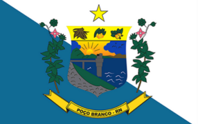

Poço Branco/RN
Poço Branco é um município brasileiro do estado do Rio Grande do Norte. Foi criado em 1963, com território desmembrado de Taipu, e instalado em 1964. O município foi criado no dia 26 de julho de 1963, pela Lei nº. 2.899, desmembrando-se do município de Taipu e se tornando uma cidade do RN.
História
A história da cidade começa, de fato, com a construção da Barragem Engenheiro José Batista do Rego Pereira, iniciada em julho de 1959 e inaugurada em Dezembro de 1969. Durante esses dez anos foi concluído o processo de indenização das famílias que moravam no curso do rio Ceará Mirim e passaram a habitar a nova cidade. A obra foi executada pela construtora Nóbrega & Machado que também planejou a cidade, suas ruas e avenidas. Por muitos anos, Poço Branco foi, junto com Brasília/DF, uma das poucas cidades planejadas do país. A sua população foi formada basicamente pela miscigenação entre os antigos moradores de Poço Branco Velho e os funcionários da construtora da barragem, já que muitos deles constituíram família em solo poçobranquense.
O processo de emancipação de Poço Branco teve início no final dos anos 50, tendo à frente os senhores José Francisco de Souza (Zé Igapó) e Ivan Cardoso de Carvalho. Outros nomes como Cícero de Freitas, Manoel Targino, Eráquio Alves, Raimundo Rodrigues, Antonio Pereira, Raimundo Nonato, João Teixeira, Sebastião Rodrigues, dentre alguns outros, encabeçaram o movimento que separou Poço Branco de Taipu. Como em todo movimento separatista, este também teve alguma oposição. A população de Taipu não chegou a se insuflar contra a separação, mas os políticos taipuenses eram contrários.
Não há documentos oficiais que comprovem, de fato, quais foram os verdadeiros fundadores de Poço Branco, enquanto povoado. O que há são apenas suposições. O livro do ilustre poçobranquense Raimundo Rodrigues da Silva (Raimundo Caxiado) é uma das poucas “fontes vivas” da história da cidade, embora a publicação mencione, com maior ênfase, o período pós-povoado. Antes de 1900, existia um pequeno aglomerado de casas, pouco urbano, às margens de um pequeno rio. “Era uma casa aqui, outra acolá e muitos serrotes de pedra e mata”, conta o morador José Cícero de Oliveira (Ciço de Filó).
Aos poucos, o pequeno povoado foi ganhando novos moradores devido, principalmente, às grandes secas por que passava o sertão potiguar. Para Poço Branco Velho vieram e passaram alguns viajantes, famílias nômades (ciganos) e boiadeiros em busca de um bom lugar pra se estabelecer. Nesse período, o povoado ainda não tinha um nome de consenso, mas acabou sendo chamado inicialmente de Jacaré. No inverno, as cheias do rio criavam belas fontes cristalinas d’água: as cachoeiras e os poços. Talvez tenha vindo daí a origem mais aceita do nome que deu origem ao atual município.
Bandeira da Cidade
Brasão de Armas da Cidade